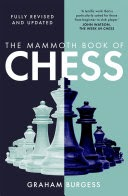
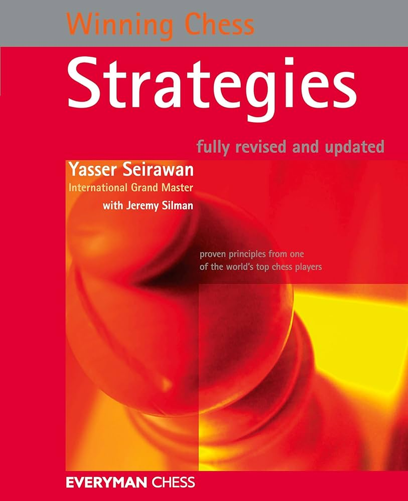
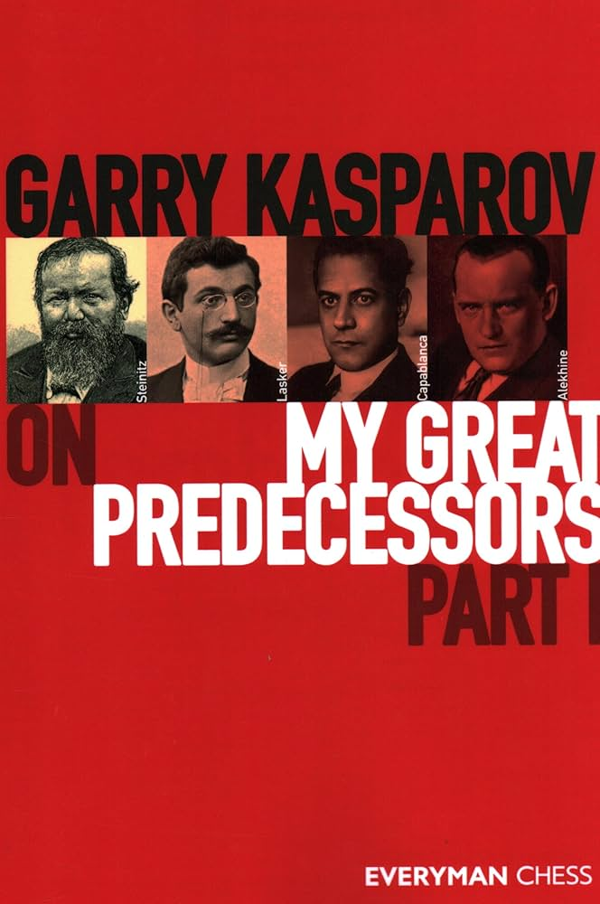
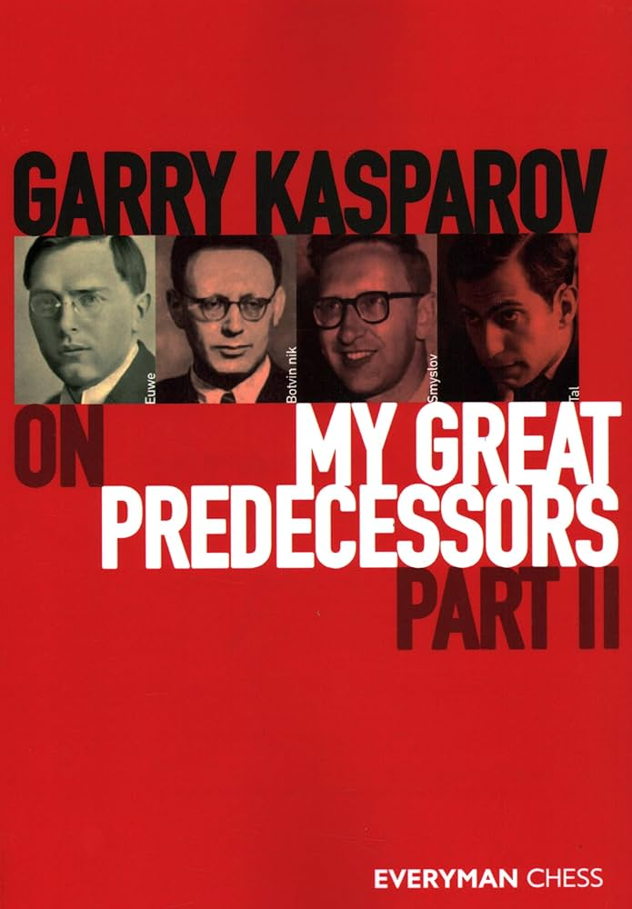
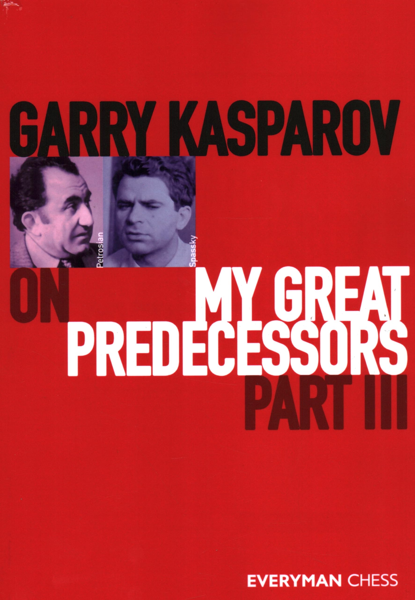
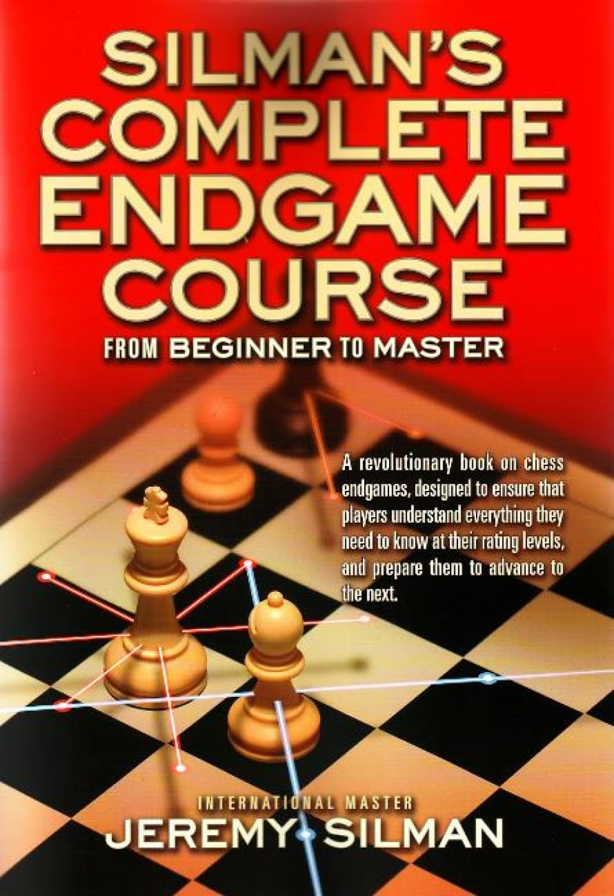

Name: The Mammoth Book Of Chess
Author: Graham Burgess (FIDE Master and prolific author)
Rating: 1000–1400
Theme: All-rounder (Openings, Endgames, Strategy, Tactics, Psychology)
Owner's Remarks:A very detailed and huge book by FM Graham Burgess, covering almost all aspects of the game including tactics, strategies, openings, and endgames.The book also includes a good number of games and stories of chess legends. It is a must-have for any chess enthusiast, especially those looking for a well-rounded understanding of the game.
RECOMMENDED USE: Treat this as an all-in-one reference book. Read chapters that align with your training focus — for example, the tactics section when drilling puzzles, or the openings section when preparing lines.
Lender: Capt. Daksh Shukla, Capt. Karamjeet Singh

Name: 18x64: Chess Class, Life Lessons with Bhagavad Gita Shlokas
Author: P N Naveen Karthikeyan (CCBW Arbiter)
Rating: 800–1700
Theme: Puzzles, Philosophy
Owner's Remarks: 18x64 Chess Class, Life Lessons with Bhagavad Gita Shlokas is a great pocket puzzle book with a philosophical touch. It introduces players to spirituality and connects chess positions and ideas with Bhagavad Gita's shlokas. All the positions are from Grandmaster games and are aimed at improving chess calculation.
Lender: Capt. Daksh Shukla

Name: Winning Chess Strategies
Author: GM Yasser seirwan, 4 time US Champion
Rating: 800-1700
Theme: Strategies, Positional Play
Owner's Remarks: Yasser divides different strategies through chapters and shows games, explaining how the strategies work and how they are effective in gaining an edge — all in a really easy way, making it suitable for intermediate players.
RECOMMENDED USE: Study strategies through this book and try to implement those strategies in your openings.
Lender: Capt. Daksh Shukla

Name: Garry Kasparov on My Great Predecessors: Part 1
Author: GM Garry Kasparov, Six time World Chess Champion
Rating: 1000-2400+
Theme: Grandmaster Games, Detailed analysis
Owner's Remarks: This book covers Wilhelm Steinitz, Emanuel Lasker, José Raúl Capablanca, and Alexander Alekhine.
Kasparov does not merely annotate their games — he dissects them with surgical precision, offering modern analysis, historical commentary, and personal insights.
RECOMMENDED USE:Use a physical chessboard to play through each annotated game. After every 2–3 moves, pause and reflect:
Why was this move played?
What were the alternatives?
What transformations are occurring in the position?
Which pieces will gain or lose value as the game transitions into the middlegame or endgame?
This method strengthens critical thinking and helps develop a historical chess intuition.
Lender: Capt. Daksh Shukla

Name: Garry Kasparov on My Great Predecessors: Part 2
Author: GM Garry Kasparov, Six time World Chess Champion
Rating: 1000-2400+
Theme: Grandmaster Games, Detailed analysis
Owner's Remarks: The book captures the contrast between the positional profundity of Smyslov and the explosive creativity of Tal, the methodical rigor of Botvinnik, and the scientific spirit of Euwe. Kasparov not only presents annotated games but provides a vivid narrative of chess history through the lenses of these great minds, making the book a remarkable fusion of analysis and storytelling.
RECOMMENDED USE: Use a physical chessboard to play through each annotated game. After every 2–3 moves, pause and reflect:
Why was this move played?
What were the alternatives?
What transformations are occurring in the position?
Which pieces will gain or lose value as the game transitions into the middlegame or endgame?
This hands-on, reflective method will sharpen your critical thinking and deepen your appreciation for historical and strategic chess ideas.
Lender: Capt. Daksh Shukla

Name: Garry Kasparov on My Great Predecessors: Part 3
Author: GM Garry Kasparov, Six time World Chess Champion
Rating: 1000-2400=
Theme: Grandmaster Games, World Championship History, Positional and Tactical Evolution
Owner's Remarks: Petrosian’s impenetrable defense and prophylactic genius are contrasted with Spassky’s universal, dynamic style. Through deeply annotated games, Kasparov not only provides top-level analysis but also explores the philosophical shifts and psychological battles that shaped the Cold War-era chess scene.
RECOMMENDED USE: Use a physical chessboard to follow along with the games. After every 2–3 moves, pause and reflect:
Why was this move played?
What could have been played instead?
How does this move shape the future structure of the game?
What does this position tell us about the player’s style?
This thoughtful engagement will sharpen your appreciation for both positional and dynamic chess while giving historical depth to your understanding of the world championship lineage.
Lender: Capt. Daksh Shukla

Name: Silman's Complete Endgame Course: From Beginner to Master
Author: IM Jeremy Silman (One of the best chess book composers)
Rating: 800-2200+
Theme: Endgame
Owner's Remarks: Rather than overwhelming the reader with dense theory, Silman organizes material by rating level—from beginner to master—ensuring that each player learns only what is essential at their current stage.
His conversational tone and real-world examples make even complex endings feel intuitive.
RECOMMENDED USE: Study one section appropriate to your rating and make sure you can explain the ideas without the board. Then:
Set up the positions on a physical board.
Try solving them without looking at the solution.
After solving, review Silman’s commentary and compare your thinking.
Revisit tough endings after a few days to test retention.
Use this book in tandem with practical play—online rapid games or endgame drills—to reinforce your technique
Lender: Capt. Daksh Shukla

Name: Improve Your Chess Calculation: The Ramesh Chess Course (1)
Author: GM R.B. Ramesh (Coach of Super GM R Praggnanandhaa)
Rating: 1000-2000+
Theme: Calculation, Positional, Tactical Problems
Owner's Remarks: This is not just another tactics book—it’s a masterclass in how to think. GM Ramesh doesn’t just throw puzzles at the reader; he walks you through structured thinking, teaches how to build candidate moves, eliminate noise, and visualize clearly.
Ideal for serious improvers who are ready to refine the mental processes behind accurate calculation. A must-have for tournament players aiming to reduce blunders and develop deep thinking habits.
RECOMMENDED USE: Work through the book slowly—don’t rush. Spend 10–15 minutes per position if needed.
Maintain a notebook: write down your candidate moves, analysis, and compare with the solution.
Revisit hard positions after a week to reinforce long-term calculation memory.
Pair this book with solving OTB-style puzzles or doing slow, untimed games to fully apply the methods.
Best used with a physical board to train visualization and avoid screen habits.
Lender: Capt. Daksh Shukla